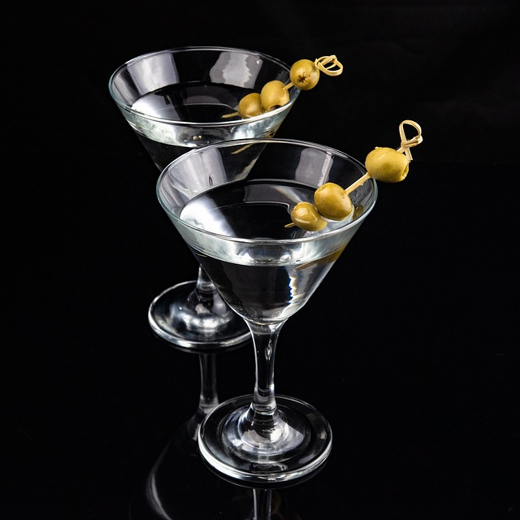

Vodka Martini Cocktail

Description
The martini is one of the most well-known mixed alcoholic drinks. Ian
Fleming's James Bond is famously known for ordering it "skaken, not
stirred".
Ingredients
- vodka
- dry vermouth
- olives
Steps
-
Combine the vodka and the dry vermouth in a mixing glass with ice.
- Shake until chilled, then strain into a chilled martini glass.
- Top the coctail with olives threaded onto a toothpick.